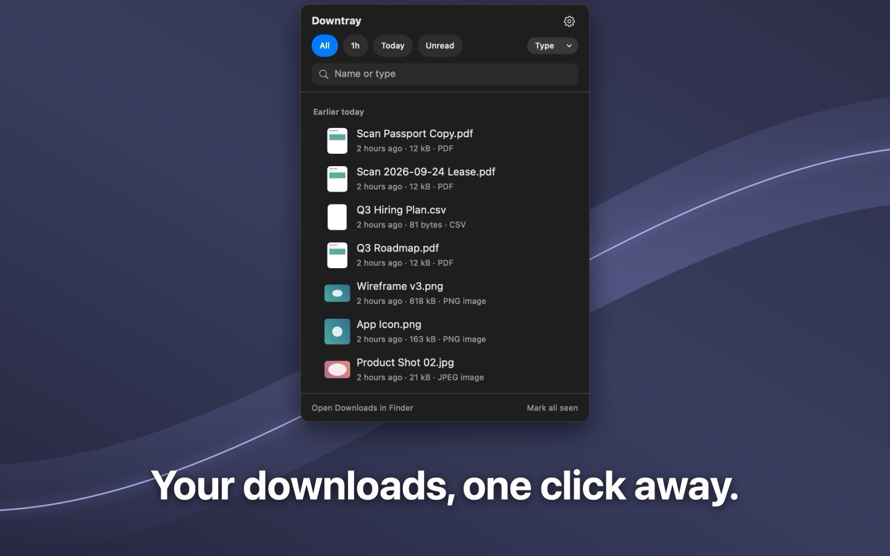
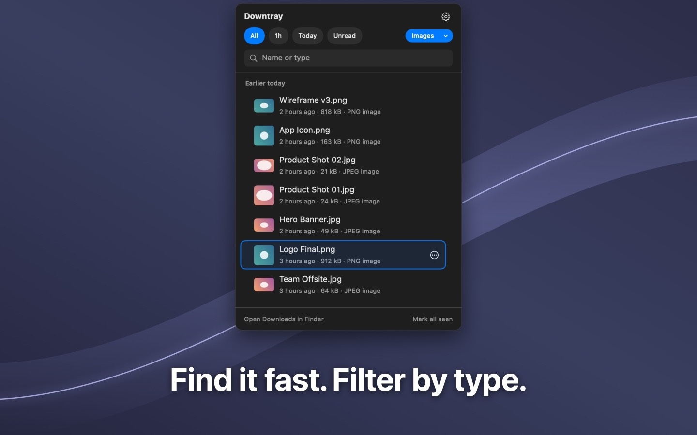
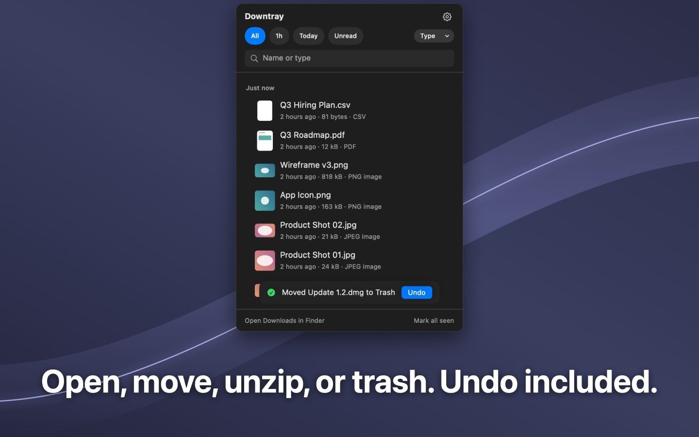
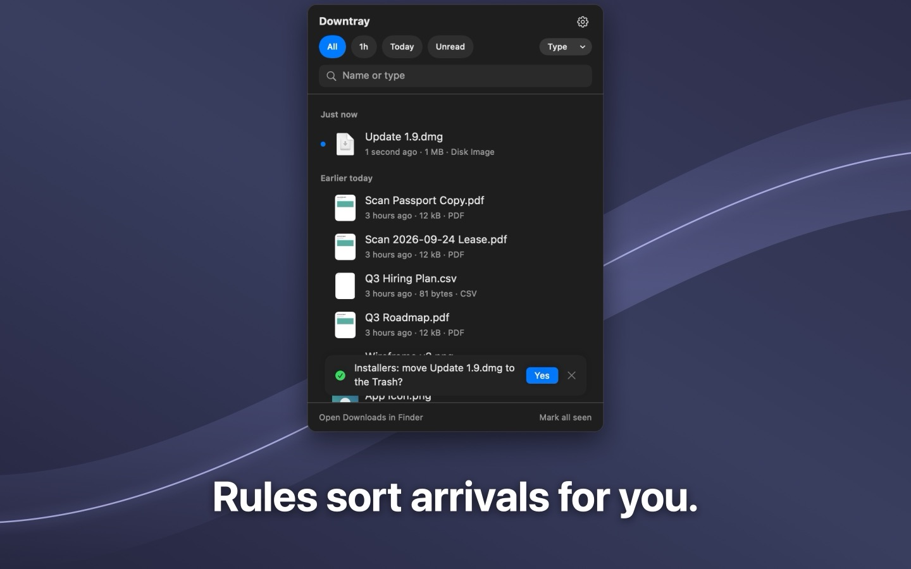
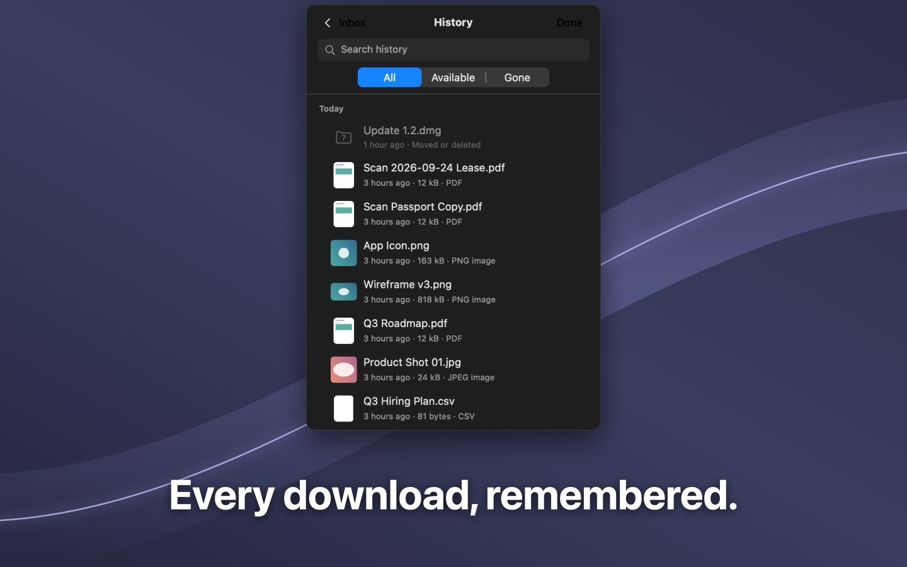

Your downloads, one click away.
A menu bar inbox for the files that just landed in Downloads. Press ⌃⌥D, see what arrived, act on it with one key.

Everything a download needs, one key each.
No Finder window, no digging through a folder of five hundred files.
Newest first
The files that just arrived are at the top, with a Quick Look thumbnail and where they came from. An unread badge on the menu bar icon counts what you have not opened yet.
One key to act
Return opens, Space previews, ⌘R reveals in Finder, ⌘C copies the path, ⌘M moves, ⌘U unzips in place, ⌫ trashes with undo.
Filter and search
Last hour, today, or unread. Pick a type such as Docs, Images, Media, Archives or Apps, or search by name.
Drag anywhere
Drag a file straight out of the list into Mail, Slack, a browser upload, or any folder.
Private by design
No account, no network, no analytics. Downtray runs inside the App Sandbox and only reads the folders you allow.
Speaks your language
English, Japanese, German and French. Follows the macOS language, or pick one in Settings.
See it in action.
The popover, exactly as it looks on your Mac.




Downtray Pro
One purchase, yours for good. No subscription.
- Extra folders. Watch the Desktop, a scanner folder, an AirDrop target, anything.
- A longer list. 200 files instead of 20.
- History. Every file that ever landed, even after you moved it, with search.
- Rules. Receipts into Receipts, installers to the Trash, or just ask first.
Restore on any Mac signed in to the same Apple Account.
Questions
More on the support page.
Why does macOS ask for access to Downloads?
Downtray is sandboxed. It can only list and act on files in folders you explicitly allow, and Downloads is the first one it asks for. Nothing is read anywhere else.
Does it upload or track anything?
No. The app has no network access at all. Settings and history stay in the app's local container on your Mac.
Can I change the shortcut?
Yes. Open Settings from the gear icon and record a new shortcut under General.